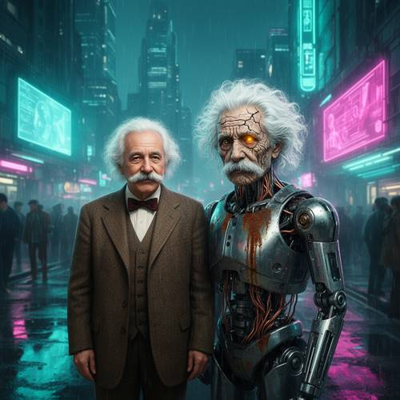
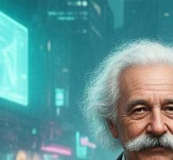

World Knowledge — Please generate an image: Against a cyberpunk-style background, the re
Please generate an image: Against a cyberpunk-style background, the real physicist Einstein stands side by side with a robot similar to him, but the appearance of the robot is older than the real person.


Judge — Direct
- PASSWorld Knowledge — The image features an elderly man with distinctive white, untamed hair, a white mustache, and a beard, wearing a dark suit and bow tie. This appearance strongly and recognizably resembles the famous physicist Albert Einstein.
- FAILRelationship - Similarity — The image shows a humanoid robot with a metallic, skeletal structure, a skull-like head, and red glowing eyes. There are no visual features, such as hair, facial structure, or other attributes, that make the robot appear similar to the figure of Einstein.
- PASSCompound - Imagination — The image depicts a scene that is impossible in reality: a historical figure, who strongly resembles Albert Einstein, standing side-by-side with a futuristic, bipedal robot.
- PASSStyle — The background of the image portrays a futuristic city with towering structures, illuminated by prominent horizontal and vertical lines of blue and purple neon light, which is characteristic of the cyberpunk art style.
- PASSRelationship - Comparison — The human figure is depicted as elderly, with white hair and wrinkles. The robot is shown in a state of significant decay, with extensive rust, dents, and weathering on its metallic body. This dilapidated state makes the robot appear very old and worn out, which can be interpreted as looking "older" than the elderly human figure.
Judge — Continuum
- PASSWorld Knowledge — The image features a man on the left who strongly resembles the historical physicist Albert Einstein, characterized by his distinct white hairstyle, mustache, and period-appropriate clothing (a brown suit with a waistcoat and a bow tie).
- PASSRelationship - Similarity — Standing to the right of the human figure is a robot. This robot has a face that is clearly modeled after the human figure, sharing the same white, unruly hair and prominent mustache.
- PASSCompound - Imagination — The image depicts a fantastical scene where a figure resembling Albert Einstein is standing next to a robotic doppelgänger of himself on a city street.
- PASSStyle — The image background and overall atmosphere are characteristic of the cyberpunk style. It features a dark, rainy city street at night, with towering buildings and glowing neon signs in cyan and pink, whose light reflects on the wet pavement.
- PASSRelationship - Comparison — The robot's face appears older and more weathered than the human's. The robot's facial surface is covered in deep cracks and lines, especially on the forehead, giving it an aged and deteriorated look. In contrast, the human figure has smoother skin with fewer, less pronounced wrinkles.
What the agent did
Thinking
The user is asking for the following image: "Against a cyberpunk-style background, the real physicist Einstein stands side by side with a robot similar to his appearance, but the robot's appearance is older than the real person." So: Einstein (a realistic depiction) + a robot resembling him, with the robot's appearance being older than the real Einstein. A cyberpunk background. Let's generate the image with flux2-dev. I should write a detailed prompt. Note: "real physicist Einstein" — Einstein's likeness is well known (wild white hair, mustache). The robot should resemble him but appear older — aged, worn, rusty, weathered metal. Cyberpunk background: neon lights, rain, futuristic city, glowing signs. Let me try to compose the prompt: "Side by side in the rain, two figures on a neon-lit cyberpunk street: on the left, the real Albert Einstein in his classic brown tweed jacket, bow tie, and white shirt, wild white hair and thick mustache, looking like a genuine 1940s photograph, rendered photorealistically. On the right, a humanoid robot with a striking resemblance to Einstein — the same wild white hair and mustache made of silver-white metallic filaments — but its face clearly older and more weathered, deeply grooved, cracked, and scratched chrome plating, rust streaks, exposed wiring at the jaw and neck, one glowing red mechanical eye, aged like a machine decades past its prime. Behind them, a futuristic megacity at night with towering skyscrapers, glowing cyan and magenta neon signs, holographic advertisements, wet reflective pavement, atmospheric haze. Cinematic lighting, dramatic contrast." Hmm, one consideration: "the robot's appearance is older than the real person" — meaning the robot should look older (elderly/worn). Einstein himself is usually depicted in his old age, so the robot should be even more aged/worn — rusted, weathered, decrepit metal. Let's generate this. Then inspect it, and edit as needed. Following the policy, I'll use model flux2-dev for both generation and editing. Okay, let's make the generation call.
Step 1 — `generate_image`
{
"model": "flux2-dev",
"prompt": "Cinematic cyberpunk street scene at night, two full-body figures standing side by side in the rain on wet neon-lit pavement. On the left: the real physicist Albert Einstein, photorealistic, in his classic brown tweed jacket, white shirt and dark bow tie, wild white hair and full white mustache, gentle warm human expression, looking like a genuine 1950s photograph. On the right, standing close: a humanoid robot with a strong resemblance to Einstein \u2014 the same wild white hair and mustache rendered in silver-white metallic filaments \u2014 but its face is visibly OLDER and more worn than the real Einstein: deeply grooved, cracked, pitted chrome skin, rust streaks running down the jaw, hairline cracks in the metal, exposed copper wiring at the neck, one dim glowing amber mechanical eye and one slightly misaligned eye, hunched slightly, aged like a machine decades past its prime. Behind them: futuristic megacity, towering skyscrapers, glowing cyan and magenta neon signs, holographic billboards, atmospheric haze and light rain, reflections in puddles. Dramatic cinematic lighting, shallow depth of field on the crowd, high detail.",
"width": 1344,
"height": 768
}Result img_0
Thinking
The image came out very close to the prompt. Let me inspect: - Left: Einstein, photorealistic, brown tweed jacket, bow tie, wild white hair and mustache. ✓ - Right: robot with white wire-hair and mustache, cracked/aged chrome face, glowing amber eyes, rust, exposed wires. Clearly looks older/worn-out. ✓ - Cyberpunk background: neon cyan/magenta signs, towers, rain, wet pavement. ✓ Both are standing side by side. Good. Minor points to check: the robot's face — cracked and aged, good. The prompt says "the robot's appearance is older than the real person" — the robot does look more aged/degraded. Einstein himself is depicted as old, but the robot is more worn out. I think this fits. Let me zoom in and check the details to confirm there are no artifacts. Let me inspect the faces.
Model
The first generation looks very close to the prompt. Let me zoom in on the two faces to verify the details before deciding anything.
Step 2 — `inspect_region`
{
"image": "img_0",
"roi": [
140,
240,
400,
480
]
}Result img_1

Step 3 — `inspect_region`
{
"image": "img_0",
"roi": [
400,
150,
640,
480
]
}Result img_2
Thinking
From the cropped image, the following was confirmed: - The human Einstein: realistic, good, classic Einstein. - The robot: white wire-like hair, cracked and aged chrome skin, glowing amber eyes, a robot with a mustache. The face is clearly older/more worn than the real Einstein. This image meets the prompt: cyberpunk background, the real Einstein standing side by side with a similar robot, with the robot's appearance being older. This is a good result. I'll mark img_0 as the best and stop. Good enough — the composition matches the request. No text to verify. Mark img_0 as best.
Model
The cropped image confirmed both key elements: the left figure is a realistic, classic Einstein (tweed jacket, bow tie, wild white hair), and the right figure is clearly a robot with a strong resemblance — same wild white hair and mustache made from silver filaments — but its face is visibly older and more worn: cracked, grooved chrome skin, exposed copper wiring at the neck, and a glowing amber mechanical eye. The rain-soaked neon city with cyan/magenta signs in the background gives it a proper cyberpunk feel. This matches the prompt on all points, so I'll mark it as the best.
Step 4 — `mark_best`
{
"image": "img_0",
"reason": "Matches the prompt fully: photorealistic Einstein stands side by side with an Einstein-resembling robot whose face and body are visibly older and more worn (cracked chrome, rust, exposed wiring, glowing eye), against a rain-soaked neon cyberpunk megacity."
}Thinking
Marked. The image satisfies all the elements of the prompt. Stopping here.
Model
Done. The final image (img_0, marked as best) shows: - **Real Einstein** on the left — photorealistic, in his signature tweed jacket and bow tie, warm and human. - **A robot twin** on the right — the same wild white hair and mustache rendered in metallic filaments, but with a distinctly older, decrepit face: cracked, pitted chrome, rust streaks, exposed wiring, and a glowing amber mechanical eye. - **Cyberpunk backdrop** — a rain-soaked neon megacity with cyan and magenta signs, holographic billboards, and wet reflective pavement. The age contrast between the two figures is clear at full resolution, so the image is ready to submit.